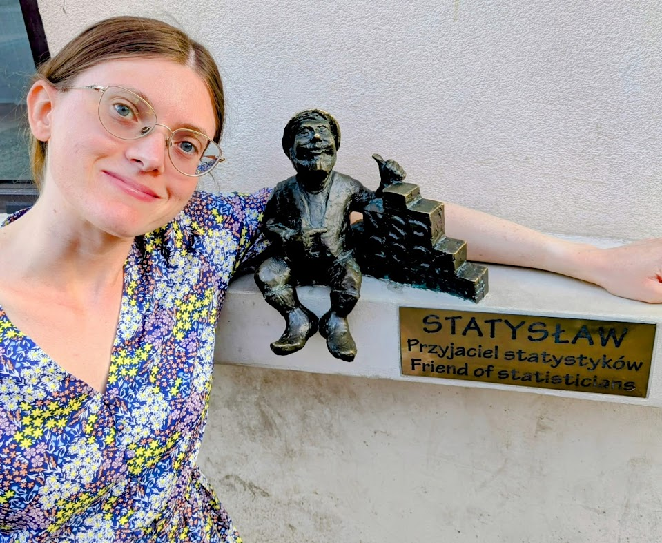
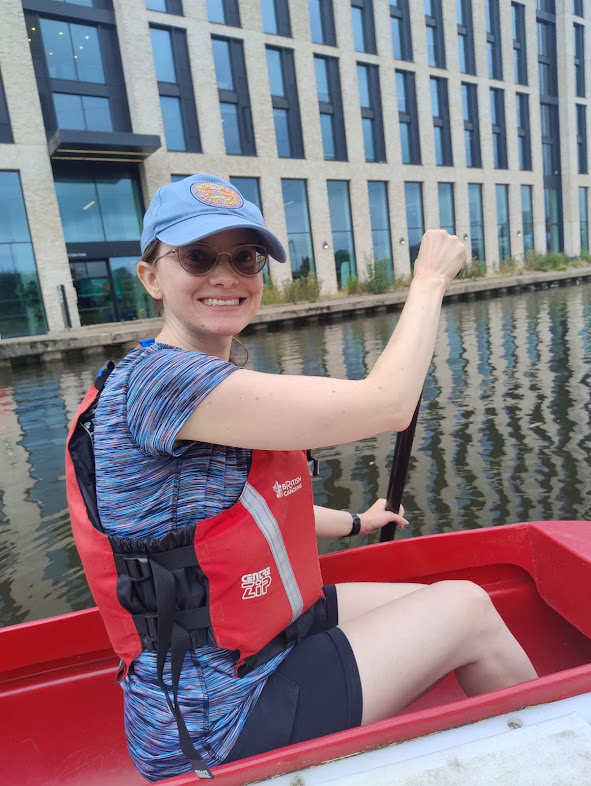

I’m an applied researcher and statistician who has worked across education, business, and health. My PhD is in Educational Statistics and Research Methods and I also have a Master’s in Industrial/Organizational Psychology and a Bachelor of Science in Psychology with a Minor in Business.

I’m Breanna Morrison, an applied researcher and statistician that has worked in a variety of fields including education, business, and health. I’m an American who studied in the states and am now working at the University of Birmingham, England. In general, I enjoy working with all types of data and have a variety of research experience in many fields.
You can find more details of my education and experience here, or look at some side projects I have coded.
Reading Running Music Video & board games Coding Musical theater Travel
Big data Psychometrics & testing Health & education disparities R & Python coding Data visualization Student retention Growth & fixed mindsets Cancer screening Employee selection Cross-cultural validation
